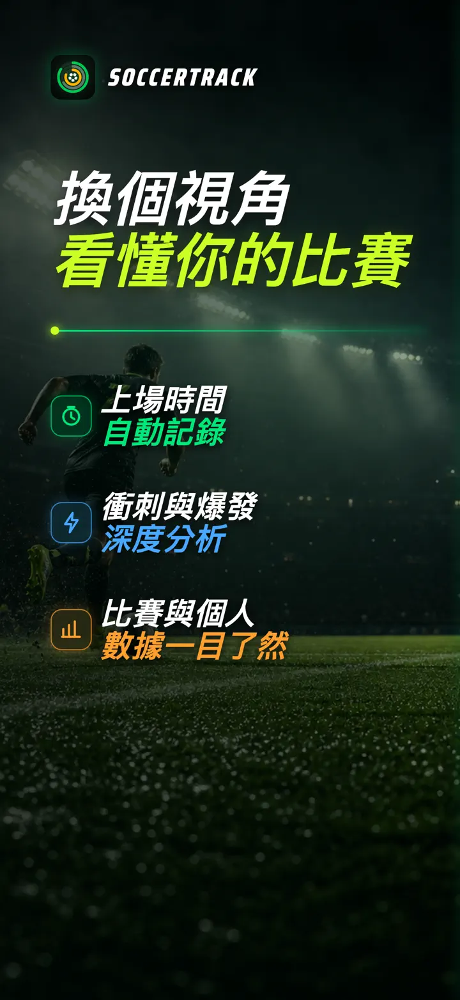
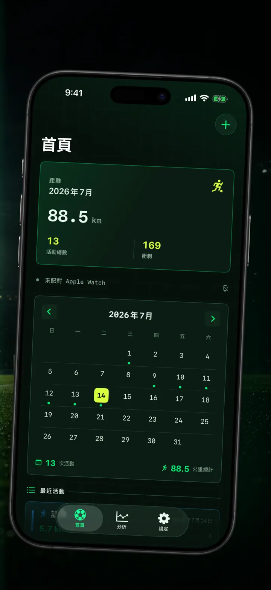
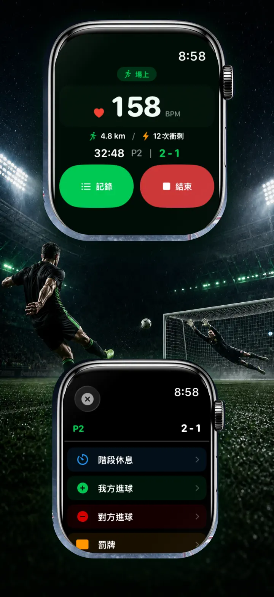
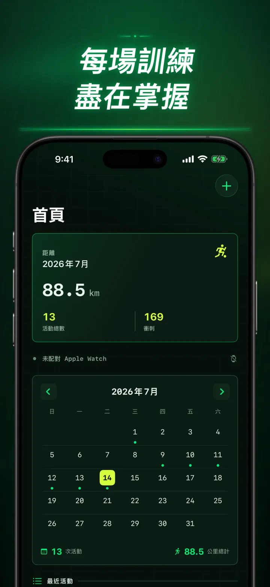
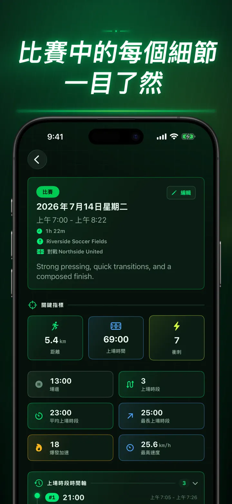
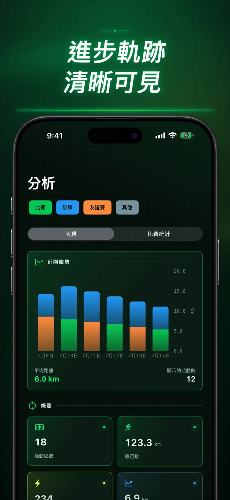
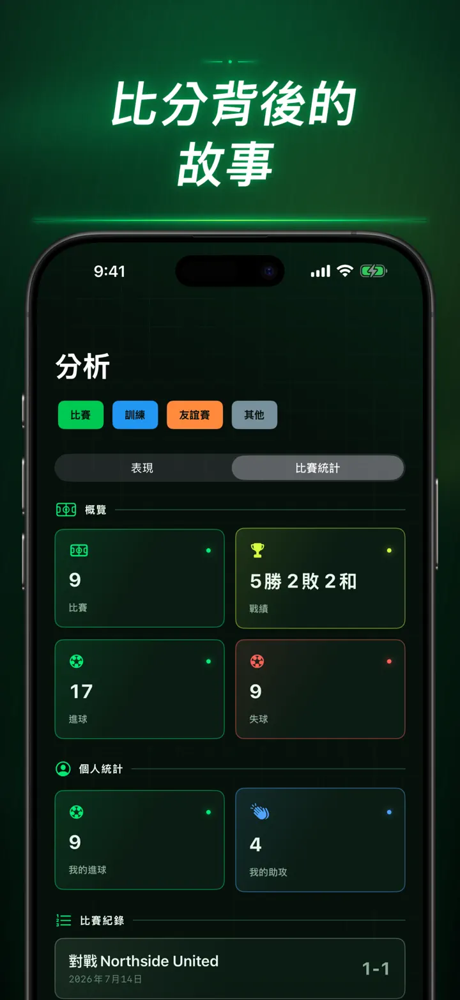
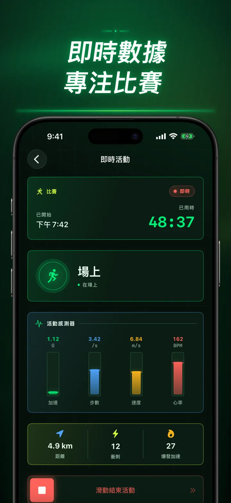
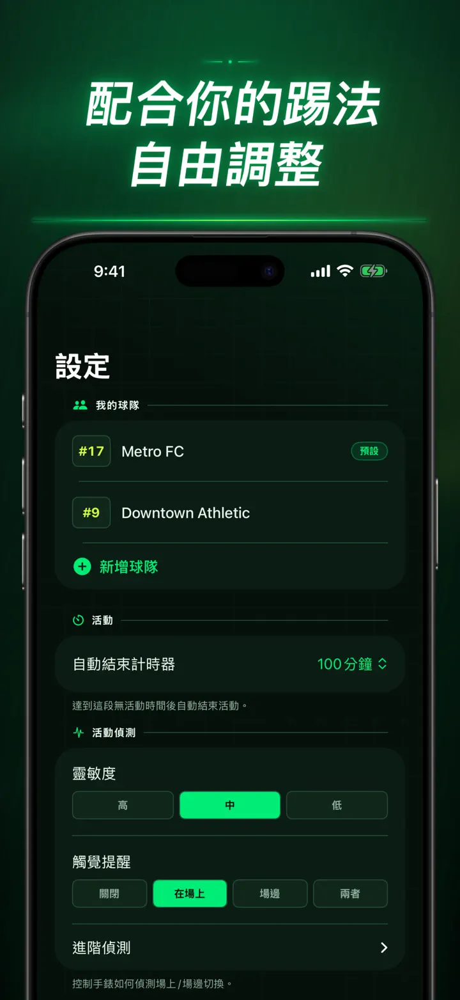
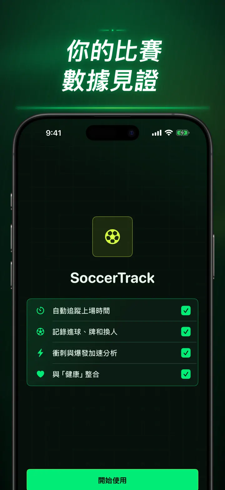

Soccer Time Track
足球上場時間與比賽分析
開始一次訓練，然後專心踢球。Apple Watch 自動區分上場與場邊時間，並記錄即時指標、衝刺、比賽事件和長期趨勢。
從 App Store 下載
關於此 App
換個角度看你的比賽。
Soccer Time Track 將 Apple Watch 變成球員的比賽助手，讓你看見終場比分之外的表現。從手腕開始記錄，專注比賽，結束後在 iPhone 上查看完整而細緻的表現分析。
自動統計上場時間
準確掌握自己何時真正參與比賽。動作、體能訓練和位置資料可協助區分上場、低活動和場邊時段，並提供：
- 上場時間和場邊時間
- 分段紀錄和清楚的時間軸
- 整場訓練過程的詳細分析
在手腕上記錄比賽
選擇比賽、訓練、友誼賽或其他。比賽過程中可記錄：
- 本隊與對手進球
- 你的進球和助攻
- 黃牌和紅牌
- 換人和比賽階段
用資料了解你的表現
除了上場時間，還可查看：
- 跑動距離
- 平均速度和最高速度
- 衝刺和高強度爆發
- 心率和活動能量
- 步頻和加速度
即時資料，專注比賽
配對的 iPhone 可以顯示即時指標，同時 Apple Watch 持續記錄體能訓練。你只需專注比賽，資料會在背景逐步形成。
看見自己的進步
將比賽、訓練、友誼賽和其他紀錄集中在同一個歷史中。查看趨勢和個人最佳紀錄、比較不同訓練，並加入球隊、球衣背號、對手、地點和備註，為每次結果保留完整背景。
需要在其他地方使用資料？可將訓練、分段紀錄和比賽事件匯出為 CSV 或 JSON。
專為 APPLE WATCH 與「健康」設計
取得你的許可後，Soccer Time Track 會使用體能訓練、心率、動作和位置資料產生分析，並將完成的足球體能訓練儲存到「健康」。自動記錄需要 Apple Watch。你也可以在 iPhone 上手動新增紀錄。
你的資料，你的比賽
紀錄會保存在你的裝置上；開啟 iCloud 同步後，也會保存在你的私人 iCloud 資料庫中。Soccer Time Track 不需帳號、沒有廣告，也不使用第三方分析工具。
不再猜測自己踢了多久。看清每一分鐘裡你做了什麼。
隱私權政策：https://masawata.net/SoccerTimeTrack/privacy-policy.html 服務條款：https://www.apple.com/legal/internet-services/itunes/dev/stdeula/
螢幕快照









Soccer Time Track
開始一次訓練，然後專心踢球。Apple Watch 自動區分上場與場邊時間，並記錄即時指標、衝刺、比賽事件和長期趨勢。
從 App Store 下載